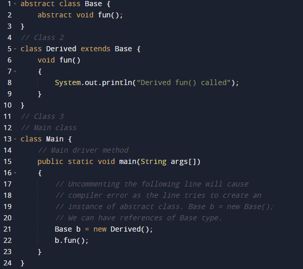

An abstract class in Java is one that is declared with the abstract keyword. It may have both abstract and non-abstract methods(methods with bodies). An abstract is a java modifier applicable for classes and methods in java but not for Variables.
Illustration: Abstract classa
bstract class Shape
{
int color;
// An abstract function
abstract void draw();
}
An abstract class is a class that is declared abstract —it may or may not include abstract methods. Abstract classes cannot be instantiated, but they can be subclassed. When an abstract class is subclassed, the subclass usually provides implementations for all of the abstract methods in its parent class.
In java, the following some important observations about abstract classes are as follows:
1. An instance of an abstract class can not be created.
2. Constructors are allowed.
3. We can have an abstract class without any abstract method.
4. There can be a final method in abstract class but any abstract method in class(abstract class) can not be declared as final or in simpler terms final method can not be abstract itself as it will yield an error: “Illegal combination of modifiers: abstract and final”
5. We can define static methods in an abstract class
6. We can use the abstract keyword for declaring top-level classes (Outer class) as well as inner classes as abstract
7. If a class contains at least one abstract method then compulsory should declare a class as abstract
8. If the Child class is unable to provide implementation to all abstract methods of the Parent class then we should declare that Child class as abstract so that the next level Child class should provide implementation to the remaining abstract method
Let us elaborate on these observations and do justify them with help of clean java programs as follows.
Observation 1: In Java, just like in C++ an instance of an abstract class cannot be created, we can have references to abstract class type though. It is as shown below via the clean java program.

Output
Derived fun()
called